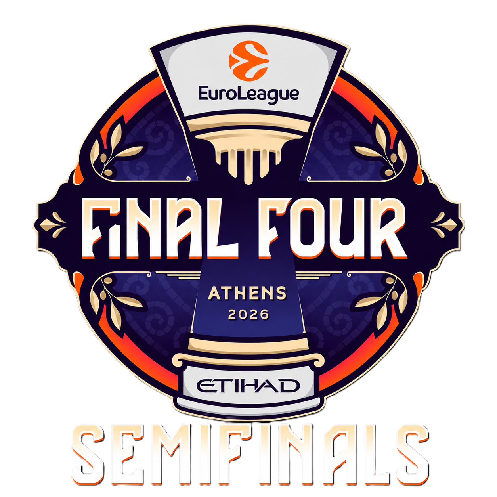

EuroLeague Final Four 2026 — Athens
Team Behavior: Assist Networks, Duo & Trio Clashes

Introduction
Four teams. One city. Athens hosts the EuroLeague Final Four for the first time in its modern era, and the two semifinal matchups could not be more different in character. Olympiacos vs. Fenerbahçe Beko is a battle of historical giants playing contrasting styles on both ends. Valencia Basket vs. Real Madrid is a Spanish derby that doubles as a philosophical clash between a rising collective and the continent’s most decorated club. This analysis cuts through the noise using lineup combination data, assist network topology, and recency-weighted ratings to answer one question: who is actually built for a single-elimination moment?
Part I — Reading the Networks: How Each Team Moves the Ball
Before duos and trios, we start with the DNA: how does each team distribute its offense through the assist graph? Four metrics frame the picture.
Entropy measures how evenly assists are distributed across passers. A score of 1.0 means every player passes equally; 0.0 means one player does everything. Degree centrality measures how hub-centric the network is — the higher the number, the more the flow depends on one or two connectors. Clustering coefficient captures whether players form tight sub-groups or a more open, chain-like flow. Mean flux polarization measures how clearly roles are split between facilitators (net assist givers) and finishers (net assist receivers).
| Team | Entropy | Degree Centrality | Clustering | Flux Polarisation | Communities |
|---|---|---|---|---|---|
| Olympiacos | 0.864 | 0.245 | 0.585 | 11.31 | 2 |
| Fenerbahçe | 0.739 | 0.264 | 0.541 | 11.61 | 3 |
| Valencia Basket | 0.888 | 0.339 | 0.787 | 15.20 | 2 |
| Real Madrid | 0.870 | 0.300 | 0.610 | 13.66 | 2 |
Based off each teams last 15 games, Valencia Basket has the highest assist entropy in the field (0.888) — their ball movement is the most democratized of the four teams. But they also have the highest degree centrality (0.339) and by far the highest clustering coefficient (0.787), meaning their offense flows through well-defined sub-groups that pass tightly within themselves. This is not a contradiction: it describes a team that has multiple self-sufficient offensive pods rather than one star-fed system. Their flux polarization is also the highest (15.20), meaning role separation between creators and finishers is the sharpest in the tournament.
Fenerbahçe is the outlier in the other direction. Their entropy is the lowest (0.739), the network is the most hub-dependent, and — uniquely — they are the only team with three detected communities rather than two. This is structurally significant: three separate assist clusters means the team’s offense does not fully connect across its own roster. Whether that is a feature (multiple distinct systems) or a vulnerability (fragmentation under pressure) becomes a central question for their semifinal.
Olympiacos and Real Madrid occupy the middle ground, with entropy scores in the 0.86–0.87 range and degree centrality near 0.25–0.30. Both are well-connected, balanced networks built around clearly defined communities of two.
SF1 Networks: Olympiacos and Fenerbahçe
Olympiacos
{kind=link}
Olympiacos splits neatly into two communities along what appears to be a starting-unit / bench-unit axis. Community 1 — Dorsey, Milutinov, Morris, Ntilikina, Papanikolaou, Vezenkov, Walkup — reads as the primary starting rotation. Community 2 — Fall, Fournier, Hall, Jones, Joseph, McKissic, Peters, Ward — is deeper and, as we will see in the duo and trio data, actually carries stronger ratings across several key combinations.
{kind=link}
Fenerbahçe
{kind=link}
Fenerbahçe’s three communities are worth naming explicitly. Community 1 — Baldwin IV, Biberovic, Birch,Bitim — is the core five-man unit and also their strongest-rated group season-long (net +12.0). Community 2 — Colson, Horton-Tucker, Birsen — is their secondary connector group, rated +7.7 and the weakest of the three. Community 3 — Hall, Jantunen, Melli, Boston Jr., De Colo, Silva — is structurally separate from the first two yet produces the best season-long net rating of any Fenerbahçe community (+21.4). The fact that Community 3 is topologically disconnected from Community 1 is unusual: Fenerbahçe’s most effective unit by the numbers is also the one least integrated into the main assist flow.
{kind=link}
SF2 Networks: Valencia Basket and Real Madrid
Valencia
{kind=link}
Valencia’s two communities split clearly along player profile lines. Community 1 — Badio, Pradilla, Reuvers, Taylor, Thompson — tilts younger and more athletic. Community 2 — Costello, De Larrea, Key, Montero, Moore, Puerto, Sako — is the experience-and-craft group that drives the team’s playmaking. Both communities produce nearly identical season-long net ratings (+11.9 and +12.0), which is a testament to how evenly coach Pedro Martínez has balanced the roster’s offensive load.
{kind=link}
Real Madrid
{kind=link}
Real Madrid’s two communities are also sharply defined. Community 1 — Abalde, Campazzo, Hezonja, Llull, Okeke, Tavares — is the star-laden primary unit, the one whose names appear throughout Madrid’s best lineup combinations. Community 2 — Deck, Feliz, Garuba, Lyles, Maledon — is the complementary rotation, and it is substantially more productive by net rating on a season-long basis (+20.3 vs. +11.7). This inversion — where the backup community outperforms the starter community — is the most interesting structural finding in the Madrid network, and it has direct implications for the Valencia matchup.
{kind=link}
Part II — Community Performance: Whose Sub-Groups Actually Win?
Networks tell us how the ball moves. Community performance tells us what happens when it arrives.
Full-Season Community Ratings
{kind=link}
{kind=link}
{kind=link}
{kind=link}
The full-season picture for Olympiacos is clear: Community 2 (+21.8 net, ~3,047 minutes) outperforms Community 1 (+14.3 net, ~5,483 minutes) by over seven points per 100 possessions, with a better defensive rating (106 vs. 112). The “starter” group plays more minutes but generates less value. This is not unusual for a team that rotates heavily, but it does suggest that OLY’s ceiling in a given game depends significantly on how much time the Hall–Ward–Peters–Joseph cluster shares the floor.
For Real Madrid, the gap between their communities is similar in magnitude: Community 2 (+20.3) versus Community 1 (+11.7). Lyles, Garuba, Deck, Feliz, and Maledon — the names behind that +20.3 — are not Madrid’s household names, but the data says they are Madrid’s most productive five-man ecosystem.
Community Ratings in Head-to-Head Games
This is where the analysis sharpens. Full-season ratings smooth over opponent quality; H2H ratings are the actual record against the specific team these players will face in two days. #### Semifinal 1 Pair
{kind=link}
| Team | Community | H2H Net | H2H Off | H2H Def | H2H Min |
|---|---|---|---|---|---|
| Olympiacos | 1 | –8.7 | 132 | 146 | 142 |
| Olympiacos | 2 | +42.6 | 140 | 92 | 96 |
| Fenerbahçe | 1 | +18.1 | 155 | 140 | 58 |
| Fenerbahçe | 2 | +4.1 | 125 | 120 | 32 |
The numbers above deserve a slow read. Olympiacos Community 1 — the primary starting group — has been outscored in aggregate across H2H games against Fenerbahçe, posting a –8.7 net rating on 142 combined minutes. Their defense in those minutes allowed the equivalent of 146 points per 100 possessions. Meanwhile, Community 2 — Hall, Ward, Peters, Joseph, Fournier, McKissic — posted +42.6 net, 140 offensive rating, and 92 defensive rating. The same team, in the same two games, produced wildly divergent results depending on which community was on the floor.
For Fenerbahçe, Community 1 (the core five) was significantly better head-to-head (+18.1) than Community 2 (+4.1). Their best-performing season-long community — Community 3 (Hall, Jantunen, Melli, Boston Jr., De Colo, Silva) — does not appear in the H2H data at the minimum threshold of 2 minutes shared per duo, suggesting they have not accumulated meaningful shared minutes against Olympiacos specifically.
The strategic implication for the OLY–FEN semifinal: Olympiacos need their Community 2 players on the floor as much as possible in decisive stretches. Their starting-five core has been a net negative in this specific matchup. Fenerbahçe’s best response is to maximize minutes for their Community 1 unit while keeping Community 3 involved — which is a challenge given the network data showing those two groups are already topologically separated. #### Semifinal 2 Pair
{kind=link}
| Team | Community | H2H Net | H2H Off | H2H Def | H2H Min |
|---|---|---|---|---|---|
| Valencia | 1 | –30.7 | 101 | 122 | 44 |
| Valencia | 2 | +7.5 | 106 | 119 | 158 |
| Real Madrid | 1 | +33.8 | 127 | 101 | 170 |
| Real Madrid | 2 | +3.3 | 126 | 122 | 133 |
These numbers tell a bleak story for Valencia Basket. Community 1 — Badio, Pradilla, Reuvers, Taylor, Thompson — has produced a –30.7 net rating in 44 minutes against Real Madrid. That is not a small-sample aberration at this minute volume; it is a pattern. Community 2 is marginally positive (+7.5) but posted only a 106 offensive rating and a 119 defensive rating — functional but not winning basketball. Real Madrid’s Community 1, meanwhile, posted +33.8 net on 170 minutes. The Campazzo/Llull-anchored unit has dominated these matchups. Community 2 (+3.3) is fine but secondary.
Part III — Duo and Trio Rankings: The Building Blocks
Full Season — Top Duos
The full-season duo data reveals the most reliable two-man combinations across the entire EuroLeague campaign. Several findings stand out.
{kind=link}
Olympiacos has four duos above +30 net rating on meaningful minutes: Peters + Joseph (+41.4, 111 min), Hall + Joseph (+38.6, 89 min), Vezenkov + Jones (+34.0, 93 min), and Peters + Jones (+33.9, 90 min). Hall + Ward (+30.2) is the most durable duo by minutes (217) while still posting elite ratings.
Also, all the team’s duos have been relatively positive in terms of Net Rating, the worst being Evan Fournier + Monte Morris. Morris is part of two out of the five worst duos in Olympiacos season. On the other side, Corry Joseph is part of two of the five best duos in terms of Net Rating. So coach Bartzokas’ decision to trust Joseph instead of Morris as the season progressed, was compeletely justifiable.
{kind=link}
Fenerbahçe has four duos above +40 net rating on meaningful minutes: De Colo + Biberovic (+57.7, 104 min), De Colo + Melli (+50.1, 90 min), De Colo + Horton Tucker (+42.9, 107 min), and De Colo + Jantunen (+42.6, 129 min). Nando De Colo - at 38 years of age - has been part of the most dominating duos for Fenerbahçe this season. One of a kind!
One concerning observation: Coach Saras has played Birch and Jantunen together for 163 total minutes—more than any of the top five duos in playing time—yet their net rating is the worst of any duo this season.
{kind=link}
Valencia once again proves that teamwork makes the dream work. Coach Martínez has kept nearly all of his duos in positive territory, the only exception being the pairing of Sergio de Larrea and Omari Moore. Meanwhile, the Bats’ top five duos in net rating are remarkably consistent, all hovering around +26.
{kind=link}
Real Madrid lead the field in top duo breadth. Their five best duos range from +23.0 to +30.5, with Tavares + Llull (+30.5, 153 min) as the anchor. Maledon + Feliz (+29.5, 244 min) is particularly notable — two Community 2 members logging heavy minutes together at elite efficiency. Feliz + Lyles (+24.9, 347 min — the most-played duo in this data) gives Madrid four genuine two-man combinations above +24.
However, coach Scariolo has also made some questionable decisions. Among all Final Four teams, Real Madrid has the worst bottom-five duos, with three pairings playing notable minutes despite posting a Net Rating below –20.
Full Season — Top Trios
{kind=link}
The trio data amplifies what duos hinted at.
Olympiacos’ most dominant trio is Vezenkov + Ward + Fournier, outscoring opponents by +50.2 points per 100 possessions across 62 minutes. Close behind is McKissic + Peters + Joseph (+49.3 in 50 minutes), which again underlines that the “Community 2” cluster is what lifts this team’s ceiling. Fournier shows up in three of OLY’s five best three-man units — he’s the perimeter glue that makes so many combinations elite.
That glue cuts both ways, though. Fournier also appears in three of Olympiacos’ bottom-five trios. Two of those pair him with McKissic and either Walkup or Ward — all three are among the most erratic perimeter shooters Olympiacos has, and the spacing craters as a result.
{kind=link}
For Fenerbahçe, it’s the De Colo + Horton-Tucker tandem that asserts dominance. Three of the club’s five best three-man lineups are built around this duo, each posting a net rating north of +70 in at least 30 minutes of shared court time.
At the other extreme, the Birch + Hall + Jantunen trio has been outscored by 30 points per 100 possessions over 90 minutes — a return that, once again, makes coach Saras’s reliance on that unit a questionable one.
{kind=link}
Valencia’s trio data paints a picture very similar to what we saw in the two-man units. All five of their best three-man lineups land between +38 and +45.7 net rating, with shared minutes ranging from 46 to 75. Costello features in three of those five — he’s the main big man for the bats.
At the other end, the Moore + De Larrea pair is equally telling. Combinations involving those two account for two of the five worst trios, posting net ratings below –34 in over 40 minutes each.
{kind=link}
Real Madrid’s most dominant three-man unit over the course of the season is Hezonja + Lyles + Llull, posting a +52.8 net rating across 45 minutes in 19 games. Next in line are Hezonja + Garuba + Lyles (+48.2) and Tavares + Okeke + Llull (+45.6), rounding out an impressive top three. What stands out most is the recurrence of Lyles — he appears in all five of Madrid’s best trios, cementing his role as the connective tissue of the team’s most effective lineups.
On the opposite end, Alex Len is a fixture in three of the five worst three-man combinations and does not feature in a single top-five unit.
Recent Form — Top Duos
Zooming into recent form sharpens the picture. Below, we examine duo performance across the last 10 regular-season games and the playoffs.
{kind=link}
Olympiacos show a new name at the top of recent form: Dorsey + Joseph (+46.6, 49 min). Dorsey, a Community 1 member, pairing with Joseph from Community 2 is a cross-community combination that the season-long data did not fully capture. Hall + Ward (+44.5) remains elite. Ward appears in four of the top five recent-form OLY duos — he is the single most important player in their current lineup ecosystem.
{kind=link}
For Fenerbahçe, just one comment is needed: Nando De Colo is a true legend of the sport.
{kind=link}
Valencia’s most potent duo in recent form is Costello and Sako. The pairing works because Costello can slide seamlessly between the four and the five, unlocking lineup flexibility. Meanwhile, Sako has steadily climbed the hierarchy — he now features in three of the club’s five best two-man units.
{kind=link}
Real Madrid have surged in recent form. Tavares and Llull now sit at a +47.2 net rating, a sharp jump from their +30.5 full-season mark. Tavares and Lyles are at +40.1, while Feliz and Lyles (+36.7 over 165 minutes) have become the highest-volume elite duo in the field. The troubling caveat: as of the day of this analysis, Walter Tavares is not expected to be available for the Final Four.
Recent Form — Top Trios
{kind=link}
Olympiacos’ best recent-form trios are driven by the Hall–Ward connection. All five three-man units with a net rating above +36 share one constant — Ward as the anchor.
{kind=link}
For Fenerbahçe, Wade Baldwin’s trios dominate the team’s top five lineups—yet they also account for three of its five worst trios.
{kind=link}
Valencia’s best recent trio—Puerto, Badio, and De Larrea—has posted a +62.5 net rating. Badio, in particular, has emerged as the rising star in Valencia’s most effective current trios.
{kind=link}
Real Madrid’s recent trio numbers are exceptional. The trio of Tavares, Okeke, and Llull leads all three-man lineups with a +65.9 net rating over 34 minutes. Three other Madrid trios also rank above +47, including Campazzo, Feliz, and Lyles at +50.4. With Tavares now sidelined, Real must maximize its use of the non-Tavares high-performing trios as much as possible.
Part IV — The Semifinal Clashes
SF1 — Olympiacos Piraeus vs. Fenerbahçe Beko Istanbul
H2H sample: 2 games. Minimum 5 shared minutes required.
{kind=link}
The head-to-head duo data tells one of the clearest stories in the entire analysis. Every single Olympiacos duo in the top five exceeds every single Fenerbahçe duo — not by a narrow margin, but by a canyon.
OLY’s top H2H duo, Hall + Ward, produced +88.8 net rating on nearly 12 minutes together in these two games. McKissic + Walkup (+82.4) and Peters + Ward (+82.2) follow. These are not cherry-picked from brief cameos: Peters + Hall accumulated 12.6 minutes at +72.5, and Ntilikina + Hall 8.5 minutes at +80.2. In head-to-head play against Fener, Olympiacos Community 2 combinations have been entirely dominant.
Fenerbahçe’s best H2H duo is Biberovic + Horton-Tucker at +38.3 on 18.1 minutes — a meaningful sample showing genuine effectiveness, but less than half of OLY’s best combination. Horton-Tucker’s presence in three of Fenerbahçe’s five best H2H duos makes him the most critical player for their side: if he is contained, their duo combinations collapse structurally.
{kind=link}
The trio clash is even more emphatic. Ntilikina + Hall + Ward produced +128 net rating on 5.4 minutes — the highest-rated combination in the entire H2H dataset for this tournament. Peters + Hall + Ward (+94.5 on 9.5 min) and Hall + Ward + Fournier (+88.8 on 11.9 min) confirm that the Hall–Ward axis is the spine of OLY’s H2H supremacy.
Fenerbahçe’s best H2H trio — Biberovic + Birch + Horton-Tucker (+57.5 on 8.2 min) — is competitive in isolation, but it stands alone at that level. Their next four trios range from +36.9 to +55.0, with Horton-Tucker again at the center of all five. The trio data reinforces the duo finding: Fenerbahçe’s most effective H2H unit is a three-man combination built around one player. Olympiacos’s top five trios involve eight different players across multiple combinations.
Verdict for SF1: The H2H data points strongly toward Olympiacos. Their Community 2 group has statistically dismantled Fenerbahçe’s best lineups in the two games they have shared. The critical coaching decision for Bartzokas is how quickly he accepts what the data shows and manages his rotation accordingly, prioritising Community 2 minutes even if that means reduced minutes for nominal starters. For Fenerbahçe’s bench, the challenge is structural: find a way to activate Community 3 against OLY, where they have not yet logged meaningful H2H time.
SF2 — Valencia Basket vs. Real Madrid
H2H sample: 2 games. Minimum 5 shared minutes required.
{kind=link}
Madrid’s H2H duo superiority is prominent too. Lyles + Llull posted +81.0 net rating on 6.2 minutes. Campazzo + Llull added +71.4 on 9.5 minutes. Garuba + Llull was +66.7 on 5.2 minutes, and Campazzo + Deck posted +54.3 on 8.1 minutes. Deck + Llull (+48.1, 10.2 min) completes five Madrid duos between +48 and +81, all involving a Community 1 core name.
Llull is present in four of Madrid’s five best H2H duos. At 36 years old, Sergio Llull is performing as the decisive X-factor in this specific matchup. The question of his availability and minute load is the single most important variable in this semifinal.
Valencia’s best H2H duo — Pradilla + Key (+59.8, 5.3 min) — is genuinely impressive and actually exceeds some of Madrid’s mid-tier duos. Costello + Sako (+47.7, 6.6 min) and Moore + Key (+42.3, 12.4 min) provide real quality. But Valencia’s five-man top range spans +36.7 to +59.8, while Madrid’s spans +48.1 to +81.0. The gap at the top end is significant.
{kind=link}
The trio clash reinforces the duo picture with one additional nuance. Madrid’s top three H2H trios — Deck + Lyles + Llull (+81.0), Garuba + Deck + Llull (+66.7), Campazzo + Deck + Llull (+54.3) — all feature Deck, a Community 2 member who appears nowhere in Madrid’s season-long top five trios. In H2H play specifically, Deck is the catalyst who makes the Llull-anchored triples devastating. This is a matchup-specific finding that the full-season data alone would have missed entirely. Another surprising finding is that Tavares is not part of any of the top five duos or trios against Valencia this season.
Valencia’s top two H2H trios — Costello + Sako + Moore (+47.7) and Montero + Costello + Sako (+47.3) — show genuine cohesion in their Community 2 group. These are not token appearances: both trios logged meaningful minutes and produced above-average net ratings. Costello and Sako are the duo-within-a-trio that Valencia should build around when they need a productive offensive possession.
The problem for Valencia is visible in their bottom two H2H trios: Badio + Pradilla + De Larrea (+11.8) and Costello + Moore + Key (+10.0). Their Community 1 trios and mixed-community combinations have been far less effective against Madrid, echoing the –30.7 community H2H rating for their younger group.
Verdict for SF2: The H2H data is clear: Real Madrid are the stronger team in this specific matchup, and the gap is widest at the lineup-combination level. Their Llull-anchored duos and Deck-infused trios have dominated Valencia in both regular season encounters. Valencia’s only realistic path is to live entirely in their Community 2 combinations — Costello, Sako, Moore, Key, Montero — from the opening tip, and hope that the Madrid defense deployed in Athens is less devastating than the one seen in H2H. If Valencia’s Community 1 group (the –30.7 net community) spends significant time together, the result will almost certainly mirror their previous encounters.
Closing Thoughts
The EuroLeague Final Four has become the sport’s most compressed and demanding tournament format — two games in three days, no margin for adjustment, no second chance. In that context, H2H data is not a curiosity; it is the most relevant sample available.
Both semifinals arrive with a clear data-driven favorite. Olympiacos have dismantled Fenerbahçe’s best lineup combinations in their two previous meetings, and their Community 2 group — the Hall–Ward–Peters–Joseph constellation — has produced ratings in H2H play that border on extraordinary. Real Madrid have been even more dominant against Valencia, with their Llull-centered combinations producing elite net ratings across meaningful minutes in both regular season encounters.
But basketball is played on the floor, not in spreadsheets. Fenerbahçe’s Community 3 (Melli, Jantunen, Hall, Boston Jr. — their best season-long group at +21.4) has not yet been exposed to meaningful H2H minutes against Olympiacos, which means it remains an untested weapon. And Valencia’s Costello–Sako–Moore core produced H2H trio ratings above +47, which means they have at least one real combination capable of stringing together productive possessions against Madrid’s defense.
What the networks tell us, ultimately, is this: the team that wins will be the one whose internal communities remain connected under pressure. Fragmented networks tend to collapse in single-elimination formats. Olympiacos and Real Madrid have the more coherent internal architectures heading into Athens. The data says trust the network.